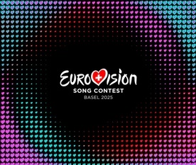
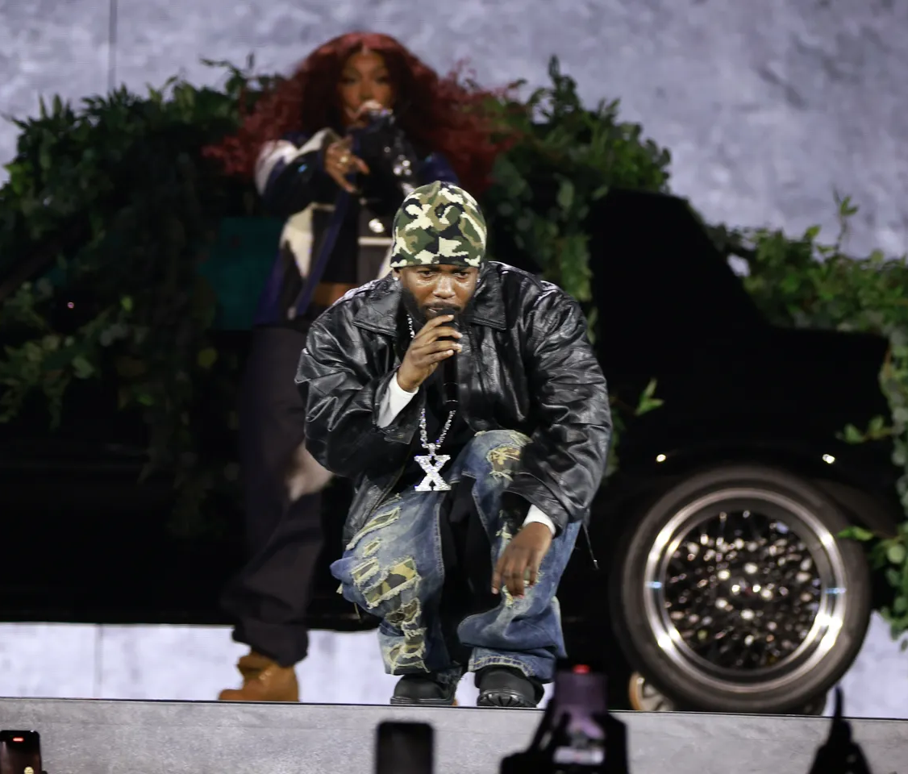
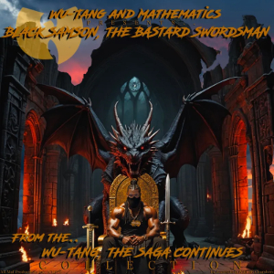
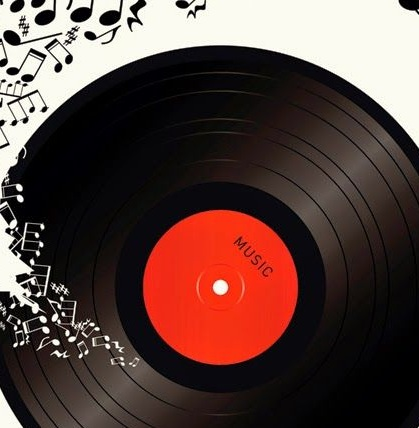

Останні музичні новини
Будьте в курсі найгарячіших історій, нових релізів та трендових тем у світі музики!

Євробачення 2025: оголошено порядок виступів у півфіналах
Європейська мовна спілка (EBU) оприлюднила порядок виступів у півфіналах пісенного конкурсу Євробачення 2025, який відбудеться у Базелі, Швейцарія. Перший півфінал запланований на вівторок, 13 травня, а другий — на четвер, 15 травня. Серед помітних учасників — ісландський гурт VÆB із піснею "RÓA", польська співачка Юстина Стечковська з композицією "GAJA" та естонський виконавець Томмі Кеш із "Espresso Macchiato". Гранд-фінал відбудеться 17 травня 2025 року.

Кендрік Ламар і SZA розпочали тур Grand National
19 квітня Кендрік Ламар і SZA розпочали свій довгоочікуваний тур Grand National на стадіоні U.S. Bank у Міннеаполісі. Відкриття вечора включало сетлист із 52 пісень, серед яких спільні композиції як "Luther", "Doves in the Wind" та "All the Stars". Під час виконання "Diamond Boy (DTM)" SZA ледве уникнула інциденту на сцені, але елегантно впоралася з ситуацією. Цей тур став першим стадіонним туром для обох артистів і триватиме Північною Америкою та Європою до серпня.

Wu-Tang Clan випустили альбом "Black Samson, The Bastard Swordsman"
Гурт Wu-Tang Clan у співпраці з продюсером Mathematics випустив свій новий альбом "Black Samson, The Bastard Swordsman" 12 квітня ексклюзивно до Дня музичних крамниць (Record Store Day). Це їхнє перше повноформатне видання з часів альбому "The Saga Continues" 2017 року. Альбом вийшов обмеженим тиражем у вигляді подвійної платівки (double LP) — лише 5 000 копій, із унікальною обкладинкою та кольоровим вінілом.
Beck виступив з BBC Concert Orchestra в Royal Albert Hall
Beck повернувся до лондонського Royal Albert Hall для двох спеціальних виступів 19-20 квітня, у супроводі BBC Concert Orchestra. Концерти включали оркестрові аранжування пісень з його альбомів "Morning Phase", "Sea Change" та "Mutations". Серед найбільших моментів виступів були виконання "Blue Moon", "Paper Tiger" та "Tropicalia". Beck також здивував аудиторію каверами та імпровізованими виступами, продемонструвавши свою різнобічність та майстерність на сцені.

Нові музичні релізи квітня 2025 року
Квітень приніс низку нових музичних релізів. Лівий альбом Ніла Янга "Coastal" зафіксував виступи з його недавнього туру, поєднуючи класичні пісні з новішим матеріалом. Елтон Джон випустив "The Lockdown Sessions II", що включає співпраці з різними артистами. Інші відомі релізи включають альбоми від Ghost, Billy Idol і L.A. Guns. Record Store Day також приніс ексклюзивні вінілові видання, радувши колекціонерів по всьому світу.